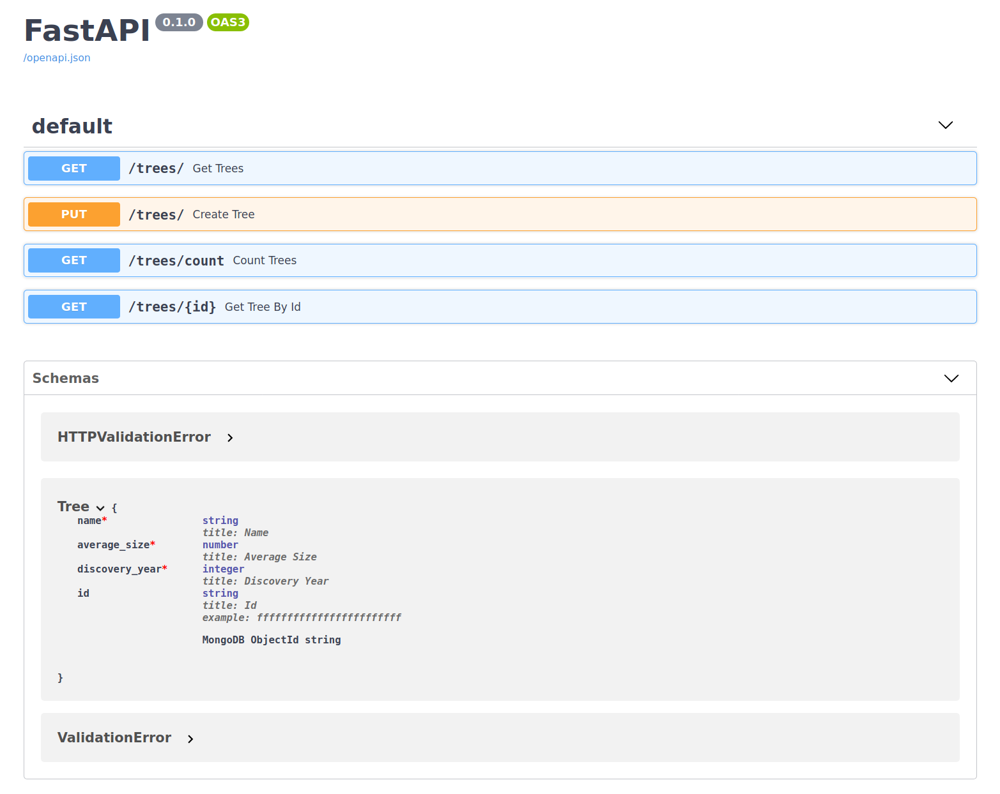

Usage with FastAPI¶
Example¶
In this example, we create a minimalist REST API describing trees by their name, average size and discovery year.
Requirements
To run the following example, you'll need to install FastAPI and Uvicorn.
pip install fastapi uvicorn
1 2 3 4 5 6 7 8 9 10 11 12 13 14 15 16 17 18 19 20 21 22 23 24 25 26 27 28 29 30 31 32 33 34 35 36 37 38 39 40 41 42 | |
You can then start the application. For example if you saved the file above in a file
named tree_api.py:
uvicorn tree_api:app
Uvicorn should start serving the API locally:
INFO: Started server process [21429]
INFO: Waiting for application startup.
INFO: Application startup complete.
INFO: Uvicorn running on http://localhost:8080 (Press CTRL+C to quit)
To try it out, you can simply access the interactive documentation generated by FastAPI at http://localhost:8080/docs.

We'll now dive in the details of this example.
Defining the model¶
First, we create our Tree model.
class Tree(Model):
name: str
average_size: float
discovery_year: int
This describes our Tree instances structure both for JSON serialization and for the
storage in the MongoDB collection.
Building the engine¶
After having defined the model, we create the AIOEngine object. This object will be responsible for performing database operations.
engine = AIOEngine()
It's possible as well to build the engine with custom parameters (mongo URI, database name). See this section for more details.
Running the python file directly
If you need to execute the python file directly with the interpreter (to use a debugger for example), some extra steps will be required.
Run uvicorn using the default event loop (if the file is called directly):
if __name__ == "__main__":
import asyncio
import uvicorn
loop = asyncio.get_event_loop()
config = uvicorn.Config(app=app, port=8080, loop=loop)
server = uvicorn.Server(config)
loop.run_until_complete(server.serve())
uvicorn.run behavior with event loops (Advanced)
The usual entrypoint uvicorn.run(app) for ASGI apps doesn't work because when
called uvicorn will create and run a brand new event loop.
Thus, the engine object will be bound to a different event loop that will not be
running. In this case, you'll witness <Future pending> attached to a different
loop errors because the app itself will be running in a different event loop
than the engine's driver.
Anyway, when running directly the app through the uvicorn CLI, the default
event loop will be the one that will be running later, so no modifications are
required.
AIOEngineDependency deprecation (from v0.2.0)
The AIOEngineDependency that was used to inject the engine in the API routes is
now deprecated (it will be kept for few versions though).
Using a global engine object should be preferred as it will dramatically reduce the required verbosity to use the engine in an endpoint.
If you need to run your app directly from a python file, see the above Running the
python file directly section.
Creating a tree¶
The next step is to define a route enabling us to create a new tree. To that end, we
create a PUT route with the path /trees/. This endpoint will receive a tree,
persist it to the database and return the created object.
@app.put("/trees/", response_model=Tree)
async def create_tree(tree: Tree):
await engine.save(tree)
return tree
Tree object (this is done by
specifying the argument tree: Tree). This mean that the model validation will be
performed. Once the model is parsed to a Tree instance, we persist it to the
database and we return it.
Command line tool for interacting with JSON based HTTP APIs
To interact with the API from the command line, we recommend to use the HTTPie CLI.
The next examples are still provided with the curl syntax since the Swagger
documentation generated by FastAPI will give you curl examples directly.
Creating a Tree from the command line
Send the request:
http PUT localhost:8080/trees/ name="Spruce" discovery_year=1995 average_size=2
HTTP/1.1 200 OK
content-length: 90
content-type: application/json
date: Sun, 18 Oct 2020 18:40:30 GMT
server: uvicorn
{
"average_size": 2.0,
"discovery_year": 1995,
"id": "5f8c8c1ff1d33aa1012f3086",
"name": "Spruce"
}
Send the request:
curl -X PUT "http://localhost:8080/trees/" \
-H "Content-Type: application/json" \
-d '{"name":"Spruce", "discovery_year":1995, "average_size":2}'
{"name":"Spruce","average_size":2.0,"discovery_year":1995,"id":"5f8c8c1ff1d33aa1012f3086"}
You can notice that the id field has been added automatically by ODMantic.
This id field is actually not required since it's defined automatically by ODMantic
with a default factory method (more details).
You can still specify this field in the request body to predefine the id of the
created instance or to overwrite an existing instance.
Why PUT instead of POST ?
Since the engine.save behave as an upsert operation (more
details), you can overwrite instances stored in the database
by creating a new instance with the same id and calling the engine.save method.
Modifying the Tree from the command line
To overwrite the tree with id=5f8c8c1ff1d33aa1012f3086:
Send the request:
http PUT localhost:8080/trees/ \
name="Norway Spruce" discovery_year=1795 \
average_size=200 id="5f8c8c1ff1d33aa1012f3086"
HTTP/1.1 200 OK
content-length: 90
content-type: application/json
date: Sun, 18 Oct 2020 18:40:30 GMT
server: uvicorn
{
"average_size": 200.0,
"discovery_year": 1795,
"id": "5f8c8c1ff1d33aa1012f3086",
"name": "Norway Spruce"
}
Send the request:
curl -X PUT "http://localhost:8080/trees/" \
-H "Content-Type: application/json" \
-d '{"name":"Norway Spruce", "discovery_year":1795,
"average_size":200, "id":"5f8c8c1ff1d33aa1012f3086"}'
{"name":"Norway Spruce","average_size":200.0,"discovery_year":1795,"id":"5f8c8c1ff1d33aa1012f3086"}
Since we can modify an existing instance, it makes more sense to define the
operation as a PUT instead of a POST that should create a new resource on each
call.
If the request body doesn't match our model schema, a 422
Unprocessable Entity error will be returned by the API, containing the details about
the error.
Invalid data while creating the Tree from the command line
You can try by omitting the average_size field:
Send the request:
http PUT localhost:8080/trees/ name="Spruce" discovery_year=1995
HTTP/1.1 422 Unprocessable Entity
content-length: 96
content-type: application/json
date: Sun, 18 Oct 2020 16:42:18 GMT
server: uvicorn
{
"detail": [
{
"loc": [
"body",
"average_size"
],
"msg": "field required",
"type": "value_error.missing"
}
]
}
Send the request:
curl -v -X PUT "http://localhost:8080/trees/" \
-H "Content-Type: application/json" \
-d '{"name":"Spruce", "discovery_year":1995}'
* Trying 127.0.0.1...
* TCP_NODELAY set
* Connected to localhost (127.0.0.1) port 8080 (#0)
> PUT /trees/ HTTP/1.1
> Host: localhost:8080
> User-Agent: curl/7.58.0
> Accept: */*
> Content-Type: application/json
> Content-Length: 40
>
* upload completely sent off: 40 out of 40 bytes
< HTTP/1.1 422 Unprocessable Entity
< date: Sun, 18 Oct 2020 18:51:33 GMT
< server: uvicorn
< content-length: 96
< content-type: application/json
<
* Connection #0 to host localhost left intact
{"detail":[{"loc":["body","average_size"],"msg":"field required","type":"value_error.missing"}]}%
The validation error structure is the one that is defined by the Pydantic: ValidationError exception.
Finally, specifying the response_model in the app.put decorator is not
mandatory but it is strongly advised as it helps FastAPI to generate the documentation.
Getting all the trees¶
To get the trees stored in the database, we use the
AIOEngine.find method in its awaitable form (more
details), this gives us directly the list of Tree
instances that we can return directly:
@app.get("/trees/", response_model=List[Tree])
async def get_trees():
trees = await engine.find(Tree)
return trees
Creating and getting the trees from the command line
Create some trees:
http PUT localhost:8080/trees/ name="Spruce" discovery_year=1995 average_size=10.2
http PUT localhost:8080/trees/ name="Pine" discovery_year=1850 average_size=5
Get the trees:
http localhost:8080/trees/
HTTP/1.1 200 OK
content-length: 270
content-type: application/json
date: Sun, 18 Oct 2020 17:59:10 GMT
server: uvicorn
[
{
"average_size": 10.2,
"discovery_year": 1995,
"id": "5f8c8266f1d33aa1012f3082",
"name": "Spruce"
},
{
"average_size": 5.0,
"discovery_year": 1850,
"id": "5f8c8266f1d33aa1012f3083",
"name": "Pine"
}
]
Create some trees:
curl -v -X PUT "http://localhost:8080/trees/" \
-H "Content-Type: application/json" \
-d '{"name":"Spruce", "discovery_year":1995, "average_size":10.2}'
curl -v -X PUT "http://localhost:8080/trees/" \
-H "Content-Type: application/json" \
-d '{"name":"Pine", "discovery_year":1850, "average_size":5}'
curl http://localhost:8080/trees/ | python -mjson.tool
[
{
"name": "Spruce",
"average_size": 10.2,
"discovery_year": 1995,
"id": "5f8c8266f1d33aa1012f3082"
},
{
"name": "Pine",
"average_size": 5.0,
"discovery_year": 1850,
"id": "5f8c8266f1d33aa1012f3083"
}
]
Pagination
You can add pagination to this GET request by using the skip and limit
arguments while calling the AIOEngine.find method.
Counting the trees¶
To get the number of trees stored in the database, we use the AIOEngine.count method without specifying any query parameters (to directly get the total count of instances).
@app.get("/trees/count", response_model=int)
async def count_trees():
count = await engine.count(Tree)
return count
Getting the tree count from the command line
Get the count:
http localhost:8080/trees/count
HTTP/1.1 200 OK
content-length: 1
content-type: application/json
date: Sun, 18 Oct 2020 20:16:50 GMT
server: uvicorn
2
Get the count:
curl http://localhost:8080/trees/count
2
Getting a tree by id¶
@app.get("/trees/{id}", response_model=Tree)
async def get_tree_by_id(id: ObjectId, ):
tree = await engine.find_one(Tree, Tree.id == id)
if tree is None:
raise HTTPException(404)
return tree
To return a tree from its id we add a path parameter id: ObjectId. Once this
endpoint is called, FastAPI will try to validate this query parameter, thus inferring an
ObjectId object.
Using BSON objects as parameters
While you can define ODMantic models directly using bson fields (more
details), it's not possible to use those types
directly with FastAPI, you'll need to get the equivalent objects from the
odmantic.bson module. Those equivalent types implement the
additional validation logic enabling FastAPI to work with them.
from odmantic.bson import ObjectId
For convenience reasons, the ObjectId type including the validation logic is as
well available directly from the odmantic module.
from odmantic import ObjectId
With this ObjectId, we build a query that will filter only the instances having this
exactly same id:
Tree.id == id
None will be returned:
tree = await engine.find_one(Tree, Tree.id == id)
404 Not Found error:
if tree is None:
raise HTTPException(404)
return tree
Getting a tree from the command line
Get the tree 5f8c8266f1d33aa1012f3082:
http localhost:8080/trees/5f8c8266f1d33aa1012f3082
HTTP/1.1 200 OK
content-length: 91
content-type: application/json
date: Sun, 18 Oct 2020 21:08:07 GMT
server: uvicorn
{
"average_size": 10.2,
"discovery_year": 1995,
"id": "5f8c8266f1d33aa1012f3082",
"name": "Spruce"
}
Get the tree 5f8c8266f1d33aa1012f3082:
curl http://localhost:8080/trees/5f8c8266f1d33aa1012f3082
{"name":"Spruce","average_size":10.2,"discovery_year":1995,"id":"5f8c8266f1d33aa1012f3082"}
Trying to get a tree not in the database from the command line
Try to get the tree f0f0f0f0f0f0f0f0f0f0f0f0 (it has not been created):
http localhost:8080/trees/f0f0f0f0f0f0f0f0f0f0f0f0
HTTP/1.1 404 Not Found
content-length: 22
content-type: application/json
date: Sun, 18 Oct 2020 21:11:48 GMT
server: uvicorn
{
"detail": "Not Found"
}
Try to get the tree f0f0f0f0f0f0f0f0f0f0f0f0 (it has not been created):
curl http://localhost:8080/trees/f0f0f0f0f0f0f0f0f0f0f0f0
{"detail":"Not Found"}
This id path parameter should be a 16 characters hexadecimal string (see MongoDB:
ObjectId
for more details). If the id specified in the path does not match this criteria, a 422
Unprocessable Entity error will be returned:
Trying to get a tree with an invalid id from the command line
Get the tree identified by invalid_object_id:
http localhost:8080/trees/invalid_object_id
HTTP/1.1 422 Unprocessable Entity
content-length: 89
content-type: application/json
date: Sun, 18 Oct 2020 20:50:25 GMT
server: uvicorn
{
"detail": [
{
"loc": [
"path",
"id"
],
"msg": "invalid ObjectId specified",
"type": "type_error"
}
]
}
Get the tree identified by invalid_object_id:
curl http://localhost:8080/trees/invalid_object_id
{"detail":[{"loc":["path","id"],"msg":"invalid ObjectId specified","type":"type_error"}]}
Extending the example¶
Deleting a tree¶
1 2 3 4 5 6 7 8 9 10 11 12 13 14 15 16 17 18 19 20 21 22 23 24 25 26 27 28 29 30 31 32 | |
This new DELETE route is strongly inspired from the one used to get a tree from its
id.
Currently, ODMantic can only delete an instance and it's not possible to perform a delete operation from a query filter. Thus, we first need to get the associated instance. Once we have the instance, we call the AIOEngine.delete method to perform the deletion.
Deleting a tree from the command line
Delete the tree identified by 5f8c8266f1d33aa1012f3082:
http DELETE localhost:8080/trees/5f8c8266f1d33aa1012f3082
HTTP/1.1 200 OK
content-length: 91
content-type: application/json
date: Sun, 18 Oct 2020 21:35:22 GMT
server: uvicorn
{
"average_size": 10.2,
"discovery_year": 1995,
"id": "5f8c8266f1d33aa1012f3082",
"name": "Spruce"
}
Check that the tree is not stored anymore:
http localhost:8080/trees/5f8c8266f1d33aa1012f3082
HTTP/1.1 404 Not Found
content-length: 22
content-type: application/json
date: Sun, 18 Oct 2020 21:36:45 GMT
server: uvicorn
{
"detail": "Not Found"
}
Delete the tree identified by 5f8c8266f1d33aa1012f3082:
curl -X DELETE http://localhost:8080/trees/5f8c8266f1d33aa1012f3082
{"name":"Spruce","average_size":10.2,"discovery_year":1995,"id":"5f8c8266f1d33aa1012f3082"}
curl http://localhost:8080/trees/5f8c8266f1d33aa1012f3082
{"detail":"Not Found"}
The tree has been removed successfully !
Updating a tree¶
We already defined a PUT route that enables us to modify (replace) a tree instance.
However, with this previous implementation, it's not possible to specify only the
fields that we want to change as the whole Tree instance is rebuilt from the request's
body.
In this example, we will define a PATCH method that will allow us to modify only some
specific fields of a Tree instance:
1 2 3 4 5 6 7 8 9 10 11 12 13 14 15 16 17 18 19 20 21 22 23 24 25 26 27 28 29 30 31 32 33 34 35 36 37 38 39 | |
TreePatchSchema this Pydantic model will contain the
modifications that we need to apply on the instance. Since we want to be able to update
each field independently, we give each of them the None default value.
Then, we configure a new PATCH endpoint by setting the id of the model to update
as a path parameter and the TreePatchSchema as the request body parameter.
After all the parameters have been validated properly and the appropriate instance have been gathered, we can apply the modifications to the local instance using the Model.model_update method. By default, the update method will replace each field values in the instance with the ones explicitely set in the patch object. Thus, the fields containing the None default values are not gonna be changed in the instance.
We can then finish by saving and returning the updated tree.
Optional, defaults, non-required and required pydantic fields (advanced)
from pydantic import BaseModel
class M(BaseModel):
a: Optional[int]
b: Optional[int] = None
c: int = None
d: int
In this example, fields have a different behavior:
a: Optional[int]- this field is not required,
Noneis its default value, it can be givenNoneor anyintvalues b: Optional[int] = None- same behavior as
asinceNoneis set automatically as the default value fortyping.Optionalfields c: int = None- this field is not required, if not explicitely provided it will take the
Nonevalue, only anintcan be given as an explicit value d: int- this field is required and an
intvalue must be provided
(More details: pydantic #1223, pydantic: Required fields)
By default Model.model_update, will not apply
values from unset (not explicitely populated) fields. Since we don't want to allow
explicitely set None values in the example, we used fields defined as
c: int = None.
Updating a tree from the command line
Update the tree identified by 5f8c8266f1d33aa1012f3083:
http PATCH localhost:8080/trees/5f8c8266f1d33aa1012f3083 \
discovery_year=1825 name="Stone Pine"
HTTP/1.1 200 OK
content-length: 94
content-type: application/json
date: Sun, 18 Oct 2020 22:02:44 GMT
server: uvicorn
{
"average_size": 5.0,
"discovery_year": 1825,
"id": "5f8c8266f1d33aa1012f3083",
"name": "Stone Pine"
}
Check that the tree has been updated properly:
http localhost:8080/trees/5f8c8266f1d33aa1012f3083
HTTP/1.1 200 OK
content-length: 94
content-type: application/json
date: Sun, 18 Oct 2020 22:06:52 GMT
server: uvicorn
{
"average_size": 5.0,
"discovery_year": 1825,
"id": "5f8c8266f1d33aa1012f3083",
"name": "Stone Pine"
}
Update the tree identified by 5f8c8266f1d33aa1012f3083:
curl -X PATCH "http://localhost:8080/trees/5f8c8266f1d33aa1012f3083" \
-H "Content-Type: application/json" \
-d '{"name":"Stone Pine", "discovery_year":1825}'
{"name":"Stone Pine","average_size":5.0,"discovery_year":1825,"id":"5f8c8266f1d33aa1012f3083"}
curl http://localhost:8080/trees/5f8c8266f1d33aa1012f3083
{"name":"Stone Pine","average_size":5.0,"discovery_year":1825,"id":"5f8c8266f1d33aa1012f3083"}
The tree has been updated successfully !
Upcoming features¶
A lot of feature could still improve the ODMantic + FastAPI experience.
Some ideas that should arrive soon:
- Add a
not_found_exceptionargument to the AIOEngine.find_one method. Thus, if the document is not found an exception will be raised directly. - Implement the equivalent of MongoDB insert method to be able to create document without overwriting existing ones.
Implement a Model.model_update method to update the model fields from a dictionnary or from a Pydantic schema.- Automatically generate CRUD endpoints directly from an ODMantic Model.